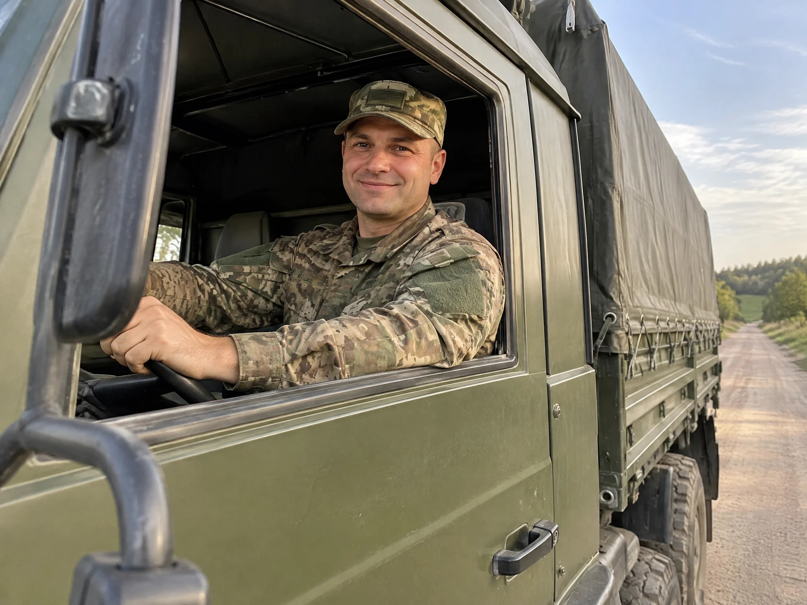
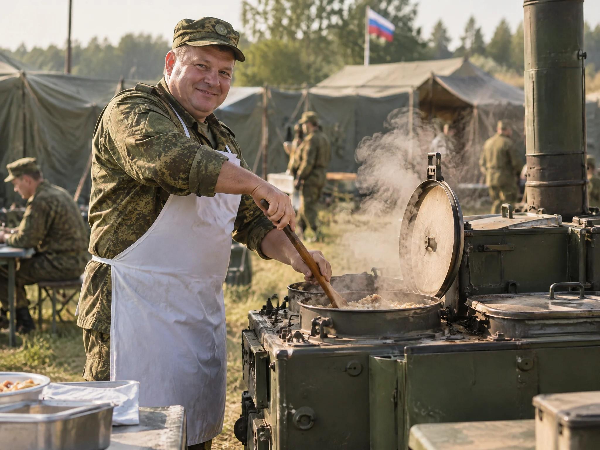
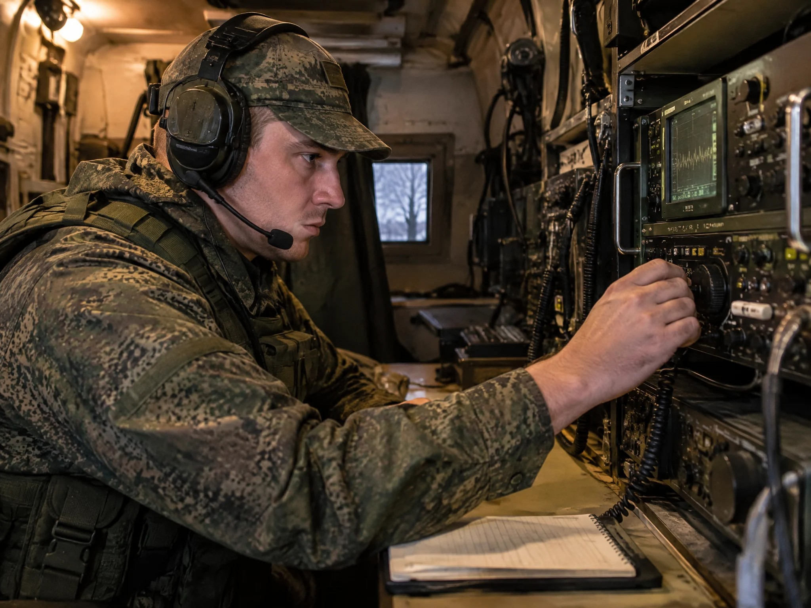
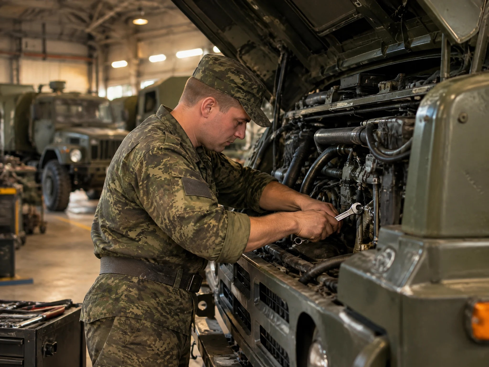

Тыловое обеспечение
Водитель
Управление военной и специальной техникой, доставка грузов и личного состава.
Подробнее →Выберите направление, которое соответствует вашим навыкам и интересам

Управление военной и специальной техникой, доставка грузов и личного состава.
Подробнее →
Приготовление пищи для личного состава в полевых и стационарных условиях.
Подробнее →
Организация хранения и учёта материальных средств, складская логистика.
Подробнее →
Оказание первой медицинской помощи и медицинское обеспечение подразделений.
Подробнее →
Техническое обслуживание и ремонт военной техники и автотранспорта.
Подробнее →